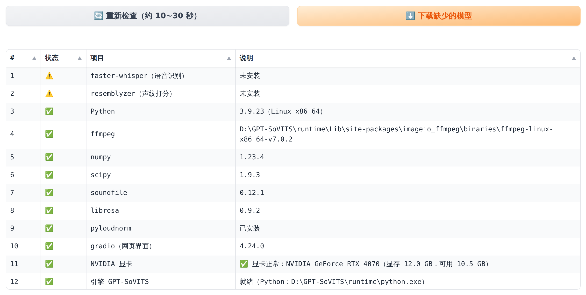

这一章完成后，你的电脑上会有两个文件夹：D:\VoiceTwin（声音分身）和 D:\GPT-SoVITS（整合包）， 桌面上会出现一个"声音分身 VoiceTwin"图标。整个过程大约 30~60 分钟，主要时间花在下载上。
VoiceTwin-Windows-v0.1.6.zip（版本号可能更高）开始下载。
Source code (zip) 和 Source code (tar.gz)，那是给开发者的源代码。VoiceTwin-Windows-v0.1.6.zip 上点鼠标右键 → 选择 全部解压缩…
（Windows 11 需要先点 显示更多选项）。D:\，然后点 提取。D:\VoiceTwin ├── install_windows.bat ← 安装程序（下一步要双击它） ├── install_windows.ps1 ├── 使用教程（先看我）.html ← 简明网页版教程 ├── README.md ├── pyproject.toml ├── docs\ ← 本手册 PDF 也在这里 └── voicetwin\ ← 程序本体，不要改动
GPT-SoVITS 是声音分身用来训练和生成你的声音的核心工具。它的官方团队为 Windows 提供了"整合包"，已经装好了 Python、PyTorch、显卡加速等所有复杂组件。
50 或 nvidia50 字样），请选那个。.7z 文件上点右键 → 7-Zip → 提取到 "文件名\"（Windows 11 要先点"显示更多选项"）。解压需要几分钟。GPT-SoVITS-v2pro-20250604。GPT-SoVITS。D:\GPT-SoVITS ├── go-webui.bat ← 有它说明位置对了 ├── api_v2.py ← 声音分身需要用到 ├── runtime\ ← 整合包自带的 Python 环境 ├── GPT_SoVITS\ ├── tools\ └── ……
install_windows.bat。install_windows.ps1 查看。============================================= VoiceTwin 声音分身 安装程序 ============================================= 安装位置：D:\VoiceTwin 请选择安装方式： 1) 推荐：安装到 GPT-SoVITS 整合包里（最省事，语音识别和训练都用显卡，不用重复下载 PyTorch） 2) 独立安装：创建单独的 Python 虚拟环境（需要本机已安装 Python 3.10 或 3.11，适合有经验的用户） 请输入 1 或 2，然后按回车: 1
【第 1/6 步】检查电脑和整合包 正在自动查找 GPT-SoVITS 整合包（大约几秒钟）…… 找到了整合包：D:\GPT-SoVITS（直接按回车用它；不对的话输入正确的路径） GPT-SoVITS 整合包路径（例如 D:\GPT-SoVITS）: D:\GPT-SoVITS 整合包位置：D:\GPT-SoVITS 检查通过。
【第 2/6 步】把声音分身装进整合包（约 1~3 分钟，下面滚动的英文是正常的，请不要关窗口） Looking in indexes: https://pypi.tuna.tsinghua.edu.cn/simple Processing d:\voicetwin ……（很多英文，正常现象） Successfully installed voicetwin-0.1.6 【第 3/6 步】安装辅助组件 ……（安装声纹打分、降噪 noisereduce 等组件，很多英文，正常现象） 【第 4/6 步】生成设置文件 已生成 D:\VoiceTwin\config.yaml，按需修改即可。 ✅ GPT-SoVITS 预训练模型已齐全 【第 5/6 步】生成桌面图标 已生成启动脚本 start_webui.bat 和 voicetwin.bat 已在桌面创建快捷方式「声音分身 VoiceTwin」 【第 6/6 步】检查环境（约 10~30 秒） 环境检查结果（共 18 项）：✅ 15 项全部正常（另有 3 个可选组件没装，不影响使用） 1. ✅ Python：3.x.x（Windows AMD64） 2. ✅ ffmpeg：D:\GPT-SoVITS\……\ffmpeg.exe …… 11. ✅ NVIDIA 显卡：✅ 显卡正常：NVIDIA GeForce RTX 4070（显存 12.0 GB，可用 10.5 GB） 12. ✅ PyTorch 显卡加速：可用：NVIDIA GeForce RTX 4070（torch 2.x.x） 13. ✅ 引擎 GPT-SoVITS：就绪（Python：D:\GPT-SoVITS\runtime\python.exe） 14. ⚠️ demucs（去背景音乐，可选）：未安装 · 可选，不用管 15. ⚠️ 引擎 Qwen3-TTS：…… · 可选，不用管 16. ⚠️ 引擎 IndexTTS：…… · 可选，不用管 …… ✅ 安装成功！双击桌面上的「声音分身 VoiceTwin」就能开始使用。 现在就打开声音分身吗？直接按回车 = 打开，输入 N 再按回车 = 不打开:
install_windows.ps1 上点右键 → 选择 使用 PowerShell 运行。如果仍然不行，请看第 15.1 节。"检查环境"会逐项列出程序需要的组件。第一行是结论，例如"环境检查结果（共 18 项）：✅ 15 项全部正常"；下面每一行都有编号和一个符号，有问题的行排在最前面：
| 符号 | 含义 | 你需要做什么 |
|---|---|---|
| ✅ | 正常 | 不用管。 |
| ⚠️ | 可选组件没装，或者是提醒 | 一般不用管。后面写着"可选，不用管"的（例如 funasr、noisereduce、demucs、引擎 Qwen3-TTS、引擎 IndexTTS）都不影响使用。只有 noisereduce 没装时，「完美」档做不出"去杂音"的版本，重新双击 install_windows.bat 安装一次就会装上。 |
| ❌ | 必需的东西有问题 | 需要处理，见下表。 |
| 常见的 ❌ 提示 | 处理方法 |
|---|---|
| 引擎 GPT-SoVITS：缺少预训练模型：……v2Pro…… | 整合包版本较早，没有自带 v2Pro 模型。打开程序，点 🩺 环境检查 页面的 ⬇️ 下载缺少的模型（3.6 节）。 |
| 引擎 GPT-SoVITS：找不到 GPT-SoVITS 目录 | 整合包路径输错了，或者之后移动过文件夹。重新运行 install_windows.bat，输入正确路径。 |
| NVIDIA 显卡：❌ 显卡没有正常工作：…… | 显卡驱动没装好，或者电脑没有 NVIDIA 显卡。按 2.4 节安装最新驱动并重启电脑。 |
| PyTorch 显卡加速：不可用 | 训练用不上显卡。先按上一行装好驱动并重启；RTX 50 系列显卡要用带 nvidia50 的整合包。 |
| ffmpeg：找不到 ffmpeg | 很少见。重新运行安装程序；仍然不行请看第 15.1 节。 |
以后想再检查，不用再看黑色窗口：打开程序，点 🩺 环境检查 标签页，它会自动检查一次。结果是一张带编号的表格（# / 状态 / 项目 / 说明），表格下面写着"共 N 项"； 最上面直接告诉你结论和要点哪里，可选组件收在折叠的"可选组件（没装也不影响使用，共 N 项）"里（图 3-1）。处理完问题后，点 🔄 重新检查（约 10~30 秒）。

较早的整合包没有自带 v2Pro 模型（大约 1~2GB）。安装时程序已经问过一次要不要下载；如果当时跳过了或者没下载成功，用下面任意一种方法补齐即可。
voicetwin.bat download-models --source hf-mirrorvoicetwin.bat doctor 按 Enter，确认"引擎 GPT-SoVITS"这一行是 "✅ 引擎 GPT-SoVITS：就绪"。D:\VoiceTwin>voicetwin.bat download-models --source hf-mirror 21:05:12 | 下载 v2Pro/s2Gv2ProPlus.pth（https://hf-mirror.com）…… 21:05:40 | 下载 v2Pro/s2Dv2ProPlus.pth（https://hf-mirror.com）…… 21:06:02 | 下载 sv/pretrained_eres2netv2w24s4ep4.ckpt（https://hf-mirror.com）…… …… ✅ 已下载 4 个文件 D:\VoiceTwin>voicetwin.bat doctor 环境检查结果（共 18 项）：…… …… 13. ✅ 引擎 GPT-SoVITS：就绪（Python：D:\GPT-SoVITS\runtime\python.exe）
version: v2ProPlus 这一行，改成 version: v2，保存。
这样会使用整合包自带的 v2 模型，不需要下载，效果略逊一些。大部分操作都在网页界面里完成，但有少数步骤（例如上一节）需要在黑色的"命令提示符"窗口里输入命令。打开方法：
cmd，按 Enter。D:\VoiceTwin>，说明已经位于正确的文件夹，可以输入命令了。D:\VoiceTwin ├── start_webui.bat ← 启动程序（桌面图标指向它） ├── voicetwin.bat ← 在命令提示符里使用的命令入口 ├── config.yaml ← 设置文件（第 13.3 节），可用记事本修改 ├── install_windows.bat ← 安装程序（重新安装、换整合包路径、升级时再运行） └── workspace\ ← 第一次准备素材后自动出现，你的所有数据都在这里 └── 我的声音\ ├── outputs\ ← 生成的音频、字幕、报告 ├── transcripts.csv ← 校对表 ├── lexicon.txt ← 读音纠正词典 └── ……（附录 B 有完整说明）
以前装过旧版本（例如 v0.1.3）的老师，不用从头再来。升级只要 3 步，你的声音、校对结果、训练好的模型和设置都会保留：
VoiceTwin-Windows-v0.1.6.zip，右键 → 全部解压缩…，位置同样填 D:\，点 提取。
提示"目标已包含同名文件"时，选 替换目标中的文件。